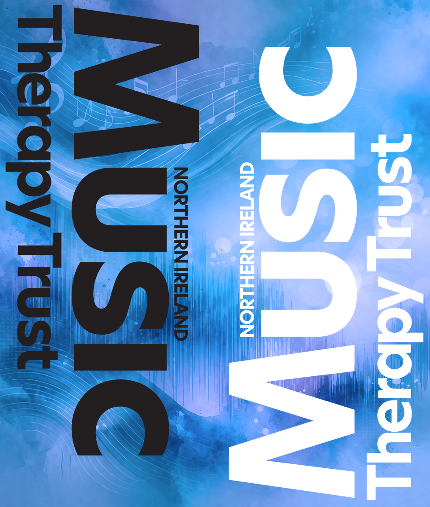

Clinical Excellence
Music therapy is delivered by qualified professionals using evidence-informed, goal-focused approaches tailored to each individual.
At Northern Ireland Music Therapy Trust, we are committed to delivering music therapy to the highest professional standard. Our practice is rooted in clinical expertise, ethical responsibility, safeguarding, and a deep respect for every person we support.

Safe, structured, person-centred delivery across every setting.
Professional standards that families, schools, and partners can rely on.
Our standards shape every stage of service delivery, from assessment and planning to therapy, review, and partnership working.
Music therapy is delivered by qualified professionals using evidence-informed, goal-focused approaches tailored to each individual.
The safety and wellbeing of children, young people, and adults is central to every service we provide.
Each person’s needs, strengths, preferences, communication style, and therapeutic goals guide the work.
We work with care, respect, confidentiality, and professional integrity in every therapeutic relationship.
Ongoing supervision and reflective practice help maintain quality, accountability, and safe decision-making.
We collaborate with families, carers, schools, healthcare professionals, and partner organisations to support meaningful outcomes.
Music therapists in the UK are regulated by the Health and Care Professions Council (HCPC), and the title “Music Therapist” is legally protected. Only professionals who meet HCPC standards can practise under this title.
All of our therapists have completed postgraduate training in music therapy (typically a two-year Master’s degree), are registered with the HCPC, and meet strict requirements for safe, ethical, and effective practice.

We take safeguarding seriously. All work is carried out within clear safeguarding procedures and reporting structures, with the welfare of clients always taking priority.
We also follow strong ethical principles in relation to dignity, boundaries, confidentiality, informed practice, and respectful therapeutic relationships.
Strong professional standards help create safe therapeutic spaces and trusted partnerships across Northern Ireland.
Music therapy is most effective when it is delivered in a safe, structured, and clinically informed environment. High professional standards help ensure that therapy is not only compassionate, but also accountable and effective.
For families, schools, care settings, and healthcare partners, this means greater confidence in the quality of support being provided and stronger foundations for positive outcomes.
We begin by understanding the individual, the context, and the areas where music therapy may offer support.
Therapy is planned around the needs, strengths, and goals of the person, group, or service.
Sessions are delivered in a safe, responsive, and professionally structured way.
Progress is reviewed through observation, reflection, and communication with relevant partners where appropriate.
Therapists engage in supervision and reflective practice to maintain safe, accountable clinical work.
Ongoing learning and professional development help us strengthen practice over time.
Get in touch to learn more about our services, our approach, and how our professional standards support safe and effective care.